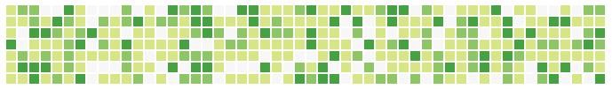

Daily Progress
Note: I will replace this the text below with a github like chart of color Blocks. Like this

Date
Score
Comment
February 10,2016
0
0
February 9,2016
3
cardio, 7 min, happy
Date:
20+ minutes of Cardio
Core: 7 minute or Running
No Confections
Don't eat after 9pm
Seek Joy